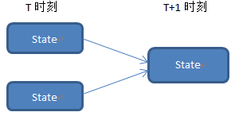
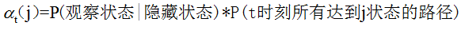
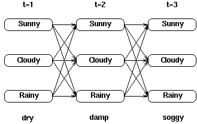
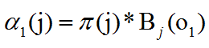
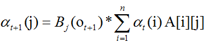
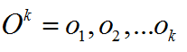
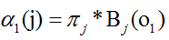
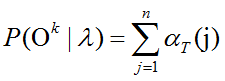
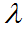

数学之美:HMM学习——预测&Forward算法
关键词: 数学 HMM
上一篇讨论了HMM的基本概念和一些性质，HMM在现实中还是比较常见的，因此也带来一了一系列的HMM应用问题。HMM应用主要面向三个方面：预测、解码和学习。这篇主要讨论预测。
简单来说，预测就是给定HMM，和一个观察得到的可观察状态序列，求出通过HMM得到这个序列的概率是多少，这也是一般机器学习等领域中比较常见的应用，得到一个模型后我们当然是希望通过这个模型来得到一些预测的结果。这个也是HMM应用比较基本比较简单的一个。
首先对于给定的HMM和观察序列，第一反应当然是穷举搜索，不妨假设模型为λ, 观察序列为O，那么问题就是求P(O|λ), 显然，我们不知道隐藏状态序列，假设隐藏序列为Q，那么则有：
可见，这样的计算方式虽然是可行的，但是太繁琐，如果模型较复杂或者观察序列比较长，那么会陷入比较繁重的计算中，这个时候，就需要引入一个比较优化的算法，这就是Forward算法，即前向算法。
首先先引入局部概率的概念，如下图所示：
T+1时刻某一状态的发生概率依赖于之前时刻状态的概率，并且仅依赖于能够达到T+1时刻该状态的路径上的状态，因此，就不需要计算T时刻所有的状态，而仅仅计算可能路径上的状态。
对于计算某一时刻观察到某一状态的局部概率应该是如下公式：
这样，原先每次需要对整个序列进行计算就简化成迭代计算，减少了计算量。
考虑一个具体的例子，也是经典的一个HMM模型例子，某地天气状况主要有三种sunny、cloudy和rainy，这是隐藏状态，同时给出观察海藻的湿度状态作为观察状态，有三种：dry、damp和soggy，例如下图是给出的一个简单例子：
显示了在三个时刻中，天气状态之间的转移和得到的海藻观察状态。这样在这个状态转移图中如果需要计算某一点的局部概率，例如：

计算t2时刻状态为“Cloudy”的概率，那么就是在t1时刻所有指向t2时刻“Cloudy”状态的路径概率之和。
那么对于t1初始时刻的局部概率怎么计算呢。定义几个符号，π为HMM中的初始向量，π[i]代表状态i的初始概率，A为状态转移概率矩阵，A[i][j]表示从状态i转移到状态j的概率，B为混淆矩阵，bi[O]代表由隐藏状态i得到观察状态为o的概率。那么，对于初始时刻的局部概率可以得到如下计算：
当t>1时刻时，计算公式可以根据前一时刻得到，由之前的定义可知，局部概率为：
这样，根据这两个公式，就可以得到整条路径上的局部概率，也就可以得到前向算法的过程。下面给出前向算法的定义：
给定观察序列，计算出现的概率：
首先我们利用初始条件计算出T=1时刻的局部概率，即为：
之后，根据公式计算依次后续时刻的局部概率，得到最终时刻的所有局部概率后，即可得到观察序列的概率，很简单，就是所有最终时刻观察序列的和：
其中 是给定的HMM模型。
下面给出了Forward算法的python实现，具体github地址可点击：
https://github.com/skymoney/HMM_ImplPost On 10 Jul 2014 @SkyMoney